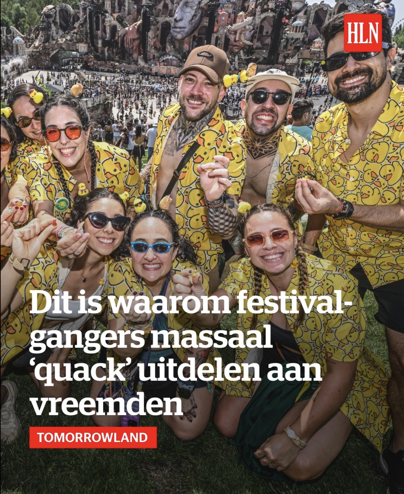
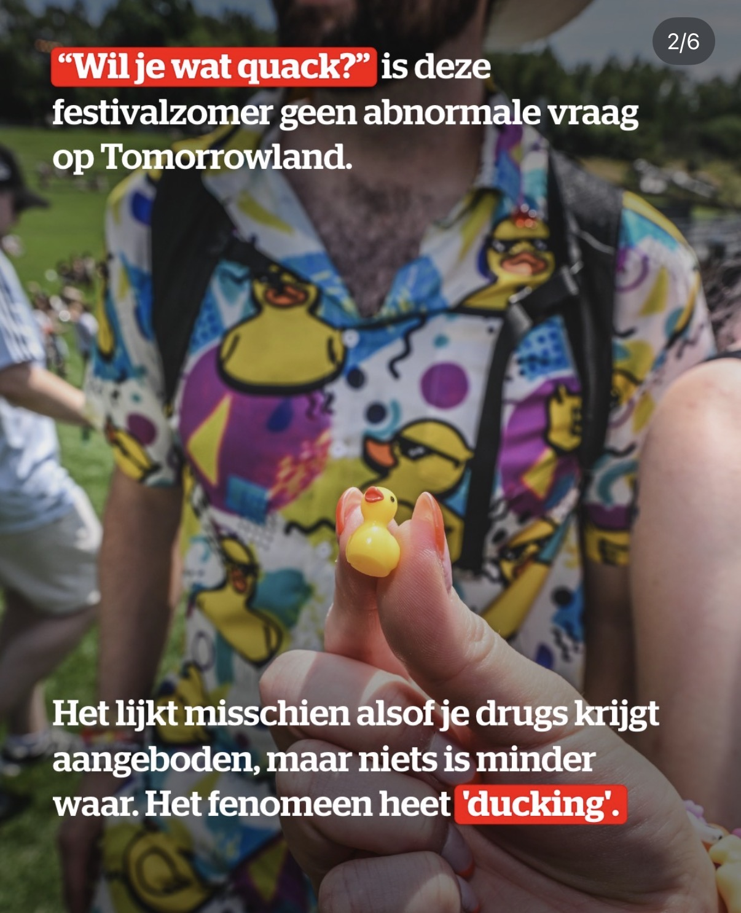
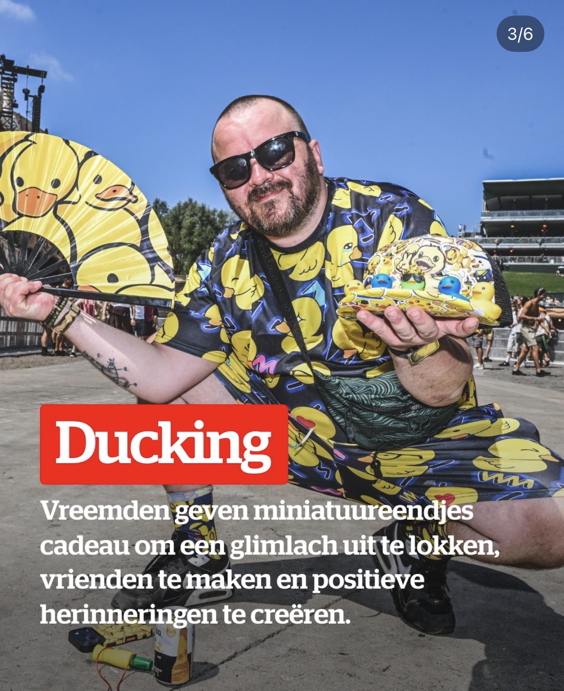
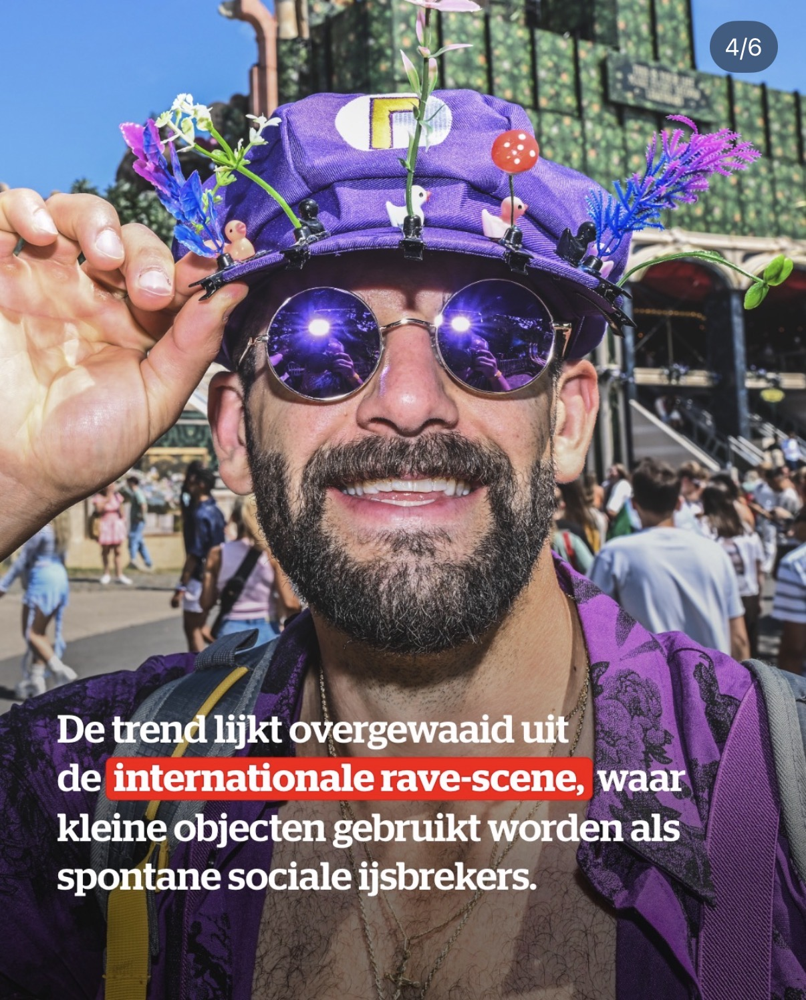
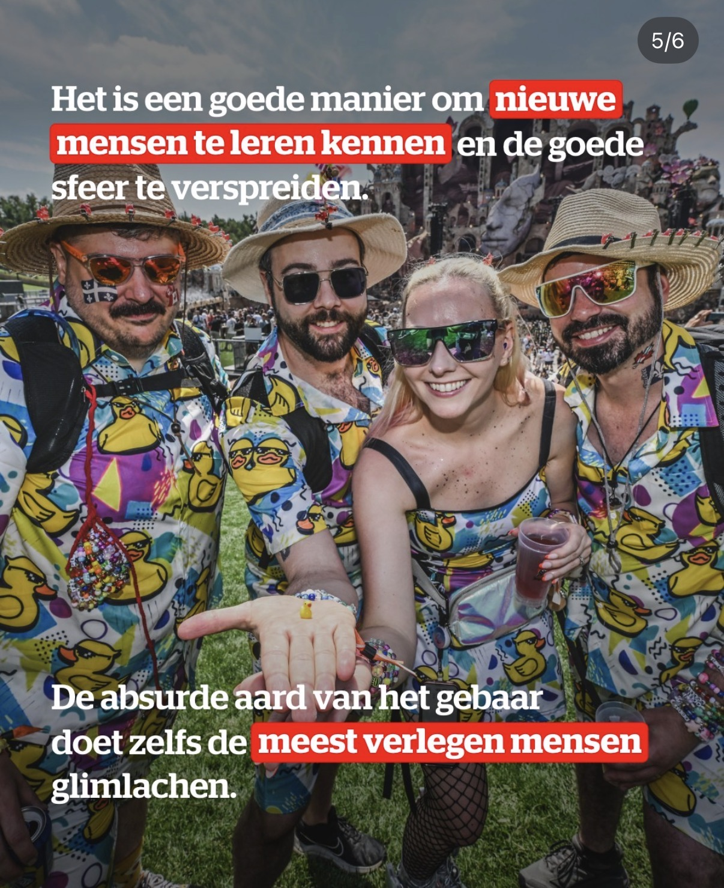

Vaste naam blijft staan. Alleen bijnaam wijzigen.
Bram & Kayleigh’s housewarming eendenjacht
100 Eenden Zoeken
Bram en Kayleigh zijn per direct naor Brabant verhuisd, jonguh. Kei schon huis, goeie meesuh, mar ze mogen beginnuh mee un compleet ontspoorde zoektocht noar honderd eenden. Pas als ze alle 100 bij elkaor hebbuh given wij dieuh waordebon. Eerst vinde die handel, foto maken en afvinken, war? Ook kei vet vur de tweeling: bietje speurwerk, grote lol. Dikke prima housewarming zo, welkom in brabant Kut! Houdoe!
Quote wordt geladen. Rustig, gast.

Kwak
100
Glow in the dark
De eenden doen dom. Heel knap, want da zijn ze ook.
Nog 100 te gaan tot Bram en Kayleigh rustig kunnen wonen, ja toch.
Eendenlijst
Vink de gevonden eenden af
Gevonden eenden
Kwakbewijs
Voor als iemand later beweert dat “die eend daar al stond toen Bram en Kayleigh de sleutel kregen”.

Het principe
Ducking
Ducking is simpel: ge geeft iemand een mini-eendje als absurd klein cadeautje. Niet omdat het nuttig is, maar omdat het zo dom is dat mensen vanzelf lachen, praten en elkaar onthouden.
Op festivals delen mensen dus “quack” uit aan vreemden als sociale ijsbreker. Hier doen we dezelfde onzin, maar dan housewarming-style: Bram en Kayleigh krijgen honderd genummerde glow-in-the-dark eenden door huis en tuin. Eerst vinden, foto maken, afvinken. Da is ducking, mar dan meej verhuisdozen en Brabantse herrie.
Mini cadeau
Glimlach los
Praatje maken
Dom genoeg om te werken





Foto's en sfeer
Eendenbeelden